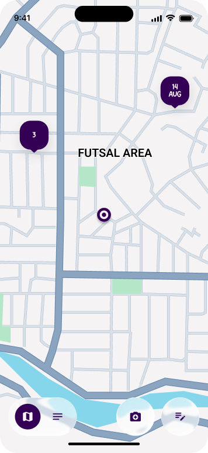
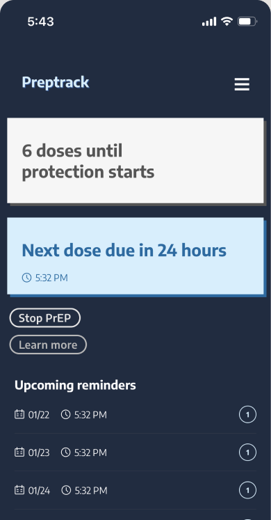
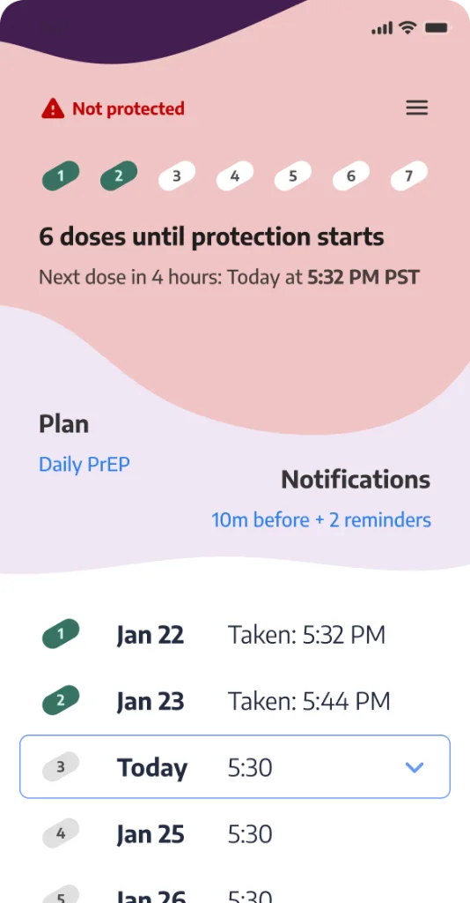
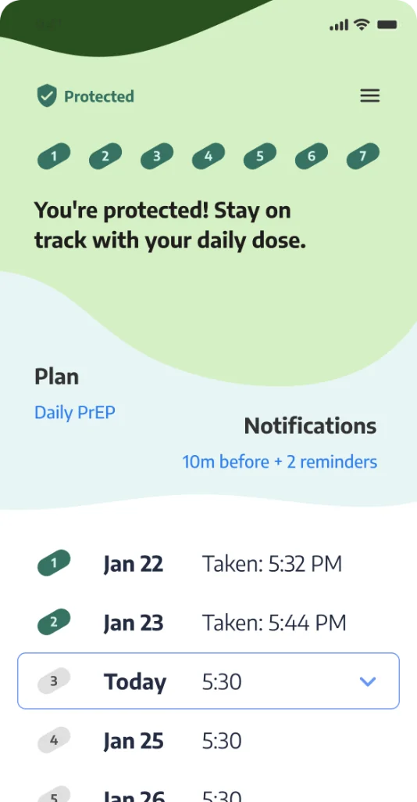

Intro
I am a human product designer in Brooklyn, NY. After meandering around Python Pig, SQL, and R for some time, I shouldered my way into design and am currently one of two principal designers in a ~150-person UX org. I’m a generalist, but find flow in fast, build-to-think workflows that require many hats.
Earnest people, potent coffee, and post-its are core to my professional love language.
Currently: Principal UX at Indeed.
Recent projects: Build guild • Coordinote app • PrepTrack
In the news
- Geekwire — Seattle Children’s Hospital to test new VR medical technology that could change the lives of patients
- King 5 — Pear Med, University of Washington CoMotion innovator shows off virtual reality tool
- Seattle Times — UW innovation chief Vikram Jandhyala takes aim at social issues
- Forbes — mSurvey and Safaricom continue Kenya’s mobile money revolution (lead UX)
- Bloomberg — AI is driving gains at a jobs website. Investors feared the opposite.
Publications & presentations
- Evaluation of a 3D Virtual Reality Model for Surgical Planning and Education. Paper presented at the annual World Congress of Endourology in Vancouver, B.C.
- Landman, J., Safiullah, S., Clayman R., … Laughery, M. (2017) Three-dimensional Kidney Model Development for Virtual Reality. Paper presented at the annual Engineering and Urology conference in Boston, MA.
- Safiullah, S., Patel R., Lama, D., … Laughery, M. (2017) Evaluation of a 3D Virtual Reality Model for Surgical Planning and Education. Paper presented at the annual World Congress of Endourology in Vancouver, B.C.
Odin
i
- Role
- Principal UX, design lead for a team of 8
- Company
- Indeed
- Links
- Video overview, Vision (Figma), Dec release (Slides)
Indeed’s venture bet on an AI recruiter for large employers.
Selected by SLT to lead the 12-person design team, scaling from inception to 4000+ companies. AI strategy highlighted as key driver through 216% stock surge.
Coordinote
i
- Role
- Design and iOS development (personal project)
- Status
- In progress
- Link
- Privacy policy
Sole designer and “developer.” Shipped app designed to help partner trail management organizations document trail issues. Gist: Location-based note/photo app so crews can quickly capture and document issues while they're in the field with limited cell service.




PrepTrack
i
- Role
- Volunteer UX
- With
- An org out of Cambridge University
Volunteer UX for an org out of Cambridge University that simplifies PrEP adherence. Provided low-cost UX suggestions end to end, built a design system, and offered some vision flows.
Past
Update



Pyrus Med
UX Lead. Co-created with MDs from hallways of UW into four major hospitals, several studies, and many conferences. Mixed reality DICOM viewer for perioperative education. Takes in voxel media - either segmented or raw CT/MRI data and makes it easy to explore fine structures and pathology.


From peer reviews
-
“Mark might be the best designer I’ve worked with in my career.”
Jason Ford, Product Director, 2024 -
“Mark is my north star for how I want to work and communicate about my work. His work is creative, he keeps a huge audience informed, and he produces more work than anyone else I know.”
Meghna, UX peer, 2024 -
“Mark’s work pushes innovation and quality. His designs are inspiringly thorough, thoughtful, and beautiful.”
Content Lead, 2023 -
“Visionary thinking and ability to push for change while bringing others on the journey.”
Product Manager, 2023